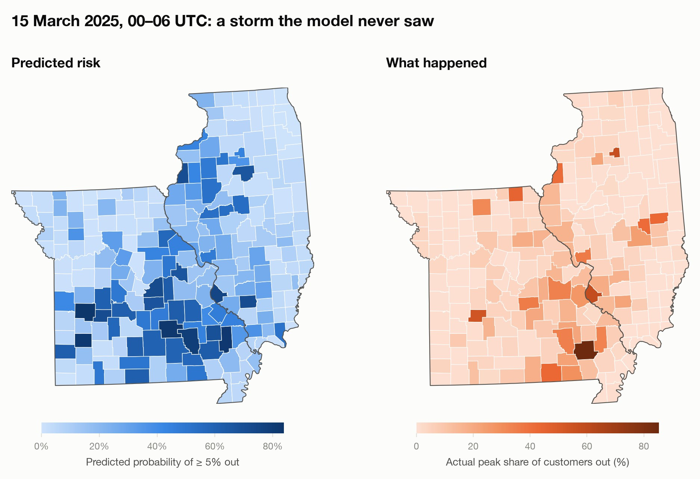
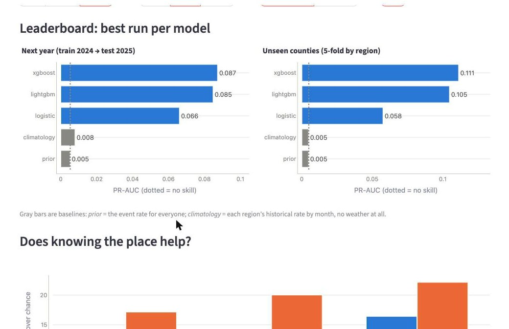
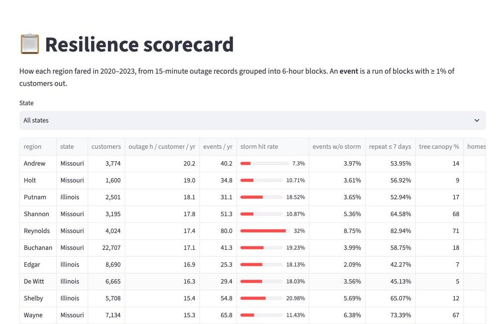
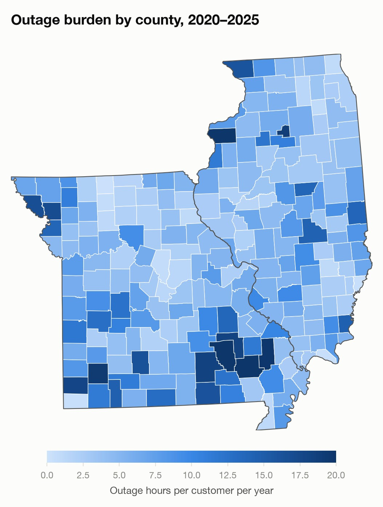

⚡ Storm Outage Risk
Which counties in Missouri and Illinois lose power when a storm hits — and why does the same storm hit some places much harder than others?
Summary
Storm outages are rare, clustered in space and time, and persistent, which makes them easy to predict badly. Using public data for Missouri and Illinois (DOE EAGLE-I outage records, NOAA HRRR weather and storm reports, tree canopy, Census housing), I built a DuckDB + dbt pipeline of 3.5 million county × 6-hour blocks and a benchmark suite of baselines and gradient-boosted trees.
Scored only on new outages, in a year the model never saw, the riskiest 1% of county-blocks turn into a ≥ 5% outage at 24× the base rate and catch about a quarter of all such outages. Weather drives the prediction; place adds a little. Official forecasts known at the start of each block (NWS warnings in force, SPC outlooks) score well below the model, which sees the block's own weather, and add 29% to it as inputs.
Most of the work went into the traps between raw data and an honest number: missing rows that look like zeros, a county filed under its neighbour's code, persistence that inflates the score fourfold, and a feature that looked important in only one model. They are written up below, with the code that handles each one.
How it started
This began as a SQL exercise: hourly weather from St. Louis Lambert airport joined to EAGLE-I outage counts, to see whether bad weather lined up with outages in St. Louis. It did, and it raised a better question. When a storm crosses the state, which counties go dark, and why does the same storm take out 2% of one county and 40% of the next? My guess was trees, old dense canopy over overhead lines, and old housing. Testing that guess honestly turned out to be the hard part.
Utilities stage repair crews before severe weather. To do that well they need to know not only when storms will cause outages, but where.
This project predicts, for every county and every 6-hour block, whether at least 1%, 5% or 10% of customers lose power, from storm ingredients (wind, gusts, wind shear, instability, rain, ice) and from what each place is like: tree canopy, housing age, density, and its own outage history. Partway through I found a related project, weathernext-outage-forecasting, forecasts county outages from weather forecasts and evaluates on random days. This one differs where it matters for an honest answer: place features, splits by time and by county, and scoring new outages separately from ongoing ones.

What I found
Outages persist: a county that is out now will likely be out in six hours. A model can look accurate by learning only that. The useful part is the onset — a block whose previous six hours were calm — so every result below is scored on new outages. PR-AUC, where a model with no skill scores the event rate.
| Outage size | New-outage rate | Climatology | Weather only | + place + history | + recent outages |
|---|---|---|---|---|---|
| Next year — trained on 2024, tested on 2025 | |||||
| ≥ 1% of customers | 1.97% | 0.028 | 0.094 | 0.118 | 0.134 |
| ≥ 5% | 0.53% | 0.008 | 0.051 | 0.061 | 0.087 |
| ≥ 10% | 0.26% | 0.004 | 0.030 | 0.041 | 0.062 |
| Unseen counties — 5-fold split by county | |||||
| ≥ 1% | 1.86% | 0.018 | 0.125 | 0.148 | 0.156 |
| ≥ 5% | 0.50% | 0.005 | 0.086 | 0.101 | 0.111 |
| ≥ 10% | 0.25% | 0.002 | 0.064 | 0.077 | 0.091 |
- Weather predicts new outages 10–30× better than chance, and every feature group adds to it on both splits.
- On new outages the model is a weather model. Its top features are surface wind, wind shear × instability, and wind × rain. Scored on all blocks instead, the previous block's outage outweighs everything else fifteenfold — that is persistence, not prediction.
- Large outages are the most predictable relative to their rarity. Of the 1% of calm county-blocks the model ranks riskiest, about 1 in 8 become a ≥ 5% outage — 24× the base rate — and together they catch about a quarter of all new ≥ 5% outages.
- The hard test is next year, not new places. Weather-only XGBoost scores 0.083 on unseen counties and 0.084 on random region-days, but 0.056 on the following year. Storms differ from year to year more than counties differ from each other.
- The algorithm barely matters. Tuned XGBoost and LightGBM tie (264-run grid search). Up-weighting rare events hurt, and shallow trees generalized best to the next year.
- Tree canopy is why I compare across models. With LightGBM alone, canopy looked important: removing it cost 12% (≥ 5%) and 22% (≥ 10%) of next-year PR-AUC. Repeating the same ablation with XGBoost, and with models trained only on new outages, the effect shrank to a few percent and sometimes reversed. From one model I would have called canopy a strong feature; across models it is weak and inconsistent. It is also correlated with rurality and the serving utility, so even where it helps, it is an association, not a cause.



How it compares
A model is only worth something next to what people already use. Three comparisons, each scored the same way as everything else on this page: new outages of at least 5% of customers, PR-AUC, same data.
Against the official forecasts
A utility watching a storm already has NWS warnings (severe thunderstorm, tornado, high wind, winter) and SPC's Day 1 convective outlook. Each becomes a baseline: the historical outage rate for every combination of warnings in force, or for every outlook risk level, learned on the training year.
The two sides know different things, so the comparison is about information, not a fair race. The official forecasts are taken as they stood when the block started: the latest outlook (issued 0.6–10 hours earlier) and the warnings already in force. The model's HRRR weather describes the block itself, close to what actually happened. It knows the storm arrived; the forecasts had to anticipate it.
| New ≥ 5% outages | Known | Next year | Unseen counties | Top-1% hit rate, next year |
|---|---|---|---|---|
| Climatology (county × month) | in advance | 0.008 | 0.005 | 1.8% |
| NWS warnings in force at block start | in advance | 0.024 | 0.027 | 5.8% |
| SPC Day 1 outlook | in advance | 0.032 | 0.031 | 8.6% |
| Warnings + outlook | in advance | 0.035 | 0.050 | 7.0% |
| This model | during the block | 0.089 | 0.104 | 12.7% |
| This model + warnings + outlook as features | during the block | 0.115 | 0.119 | 14.2% |
- Official forecasts add to the model. Given the warnings and outlook as inputs, it gains 29% on the next year and 14% on unseen counties. Forecasters know things a single HRRR point per county misses, such as a high-wind or ice-storm warning issued hours ahead.
- Counting warnings honestly matters. Counting any warning that touched the block made warnings look nearly twice as good (0.044). Of 1,445 new ≥ 5% outages in 2025, 335 had a severe thunderstorm or tornado warning somewhere in the block but only 65 had one in force at its start; the rest were issued as the storm, and often the outage, arrived.
- The fair race is still open. Matching the outlook's lead time means feeding the model weather forecasts made hours before the block. That is the next step on the roadmap.
Against weathernext-outage-forecasting's setup
The related project publishes no scores, so its setup is reproduced here on this project's data, from its code: weather features only (mapped to the closest HRRR fields), a boosted tree and a logistic regression with balanced class weights, the same ≥ 5% label, and an 80/20 split by hash of county + date.
| New ≥ 5% outages, PR-AUC | Random days (their split) | Unseen counties | Next year |
|---|---|---|---|
| Their setup: boosted tree | 0.072 | 0.072 | 0.032 |
| Their setup: logistic regression | 0.040 | 0.040 | 0.045 |
| This model | 0.105 | 0.103 | 0.093 |
- The gap opens on the next year. The deeper, class-weighted tree loses more than half its score on a year it never saw; the shallower model with place and history features holds up.
- Their headline metrics hide it. On random days their setup reports ROC-AUC 0.78 and, at a 0.5 cut-off, 60% recall, which reads well, but only 3% of those alerts are real (F1 0.06). Class weighting buys recall by flooding the alert list.
- Not their model. They use Google's WeatherNext forecasts at 24–48 h lead in Alabama; this reproduces the method, not their inputs or region.
Against published research
The closest operational work is the University of Connecticut and Eversource outage prediction model, running since 2015: machine-learning ensembles over high-resolution weather forecasts, vegetation, land cover and infrastructure, predicting outage counts up to three days ahead (Cerrai et al., 2019, IEEE Access; Watson et al., 2020, The Journal of Engineering), extended to communities across the Eastern U.S. (Taylor et al., 2023, Energy Reports). Earlier work modeled hurricane outages with generalized additive models and random forests (Han, Guikema & Quiring, 2009, Risk Analysis, and later work by Nateghi and colleagues). Those studies predict outage counts for a single utility's territory, mostly for named storms, with utility data this project doesn't have, so their scores aren't comparable. What this project adds is a public-data, multi-utility, county-level version for everyday convective and winter storms, evaluated on a future year and on new outages only.
Pitfalls, with code
Each of these produced a plausible-looking wrong answer before it was caught. The fixes live in the dbt models and Python modules named on each card, and most are guarded by a test.
1. A missing row is not a zero
EAGLE-I only writes a row for a county that has customers out. No row can mean "no outages", or it can mean the collector was down. In one county the two look identical. Across the whole country they don't: somewhere in the U.S. someone is always without power, so a block with few national snapshots means the system was down.
-- national "heartbeat": how many 15-min snapshots exist in each 6-hour block
SELECT {{ block_6h('snapshot_time') }} AS block_start, count(*) AS n_snapshots
FROM (SELECT DISTINCT snapshot_time FROM {{ ref('stg_eaglei__outages') }})
GROUP BY 1
-- then, per county and block (mart_study__region_6h.sql)
CASE WHEN NOT b.eaglei_ok THEN NULL -- system down: unknown
WHEN o.region_fips IS NULL THEN 0 -- system up, no row: a real zero
ELSE o.peak_out END AS peak_outWithout this, outage-free blocks and blind blocks get the same label, and the model is trained on holes in the data.
2. Duplicate snapshots double the outage
In early September 2025 every snapshot was recorded twice. Summing counties into regions directly would double every outage in those weeks. The fix is to collapse to one value per county per 15-minute slot first, and only then add counties together.
WITH per_county_slot AS (
SELECT fips_code, snapshot_time, max(customers_out) AS customers_out -- keep one copy
FROM {{ ref('stg_eaglei__outages') }}
GROUP BY ALL
)
SELECT {{ region_fips('fips_code') }} AS region_fips, snapshot_time,
sum(customers_out) AS customers_out -- now it's safe to add
FROM per_county_slot
GROUP BY ALL3. One county filed under its neighbour's code
From mid-2020 to 2024, St. Louis County's outages were reported under St. Louis City's FIPS code. Taken at face value, the County (about 594,000 customers) had zero customers out for three straight years, while the City's worst outage grew from 5,533 in 2019 to 83,685 in 2023, nearly 80% of its 107,000 customers. Both are modeled as one region, through a macro used everywhere a county code enters the pipeline.
-- largest outage per year, EAGLE-I as published
year St. Louis County (29189) St. Louis City (29510)
2019 28,721 5,533
2022 0 21,020
2023 0 83,685
2024 0 14,527{% macro region_fips(column) -%}
CASE WHEN {{ column }} IN ('29189', '29510') THEN '29189+29510' ELSE {{ column }} END
{%- endmacro %}4. least(100, NULL) is 100
The label caps percent-out at 100. In DuckDB, least() skips NULLs, so a blank outage count came
back as "100% of customers out", a fake catastrophe in every block with a missing count.
-- wrong: least(100.0, 100.0 * NULL / customers) = 100
CASE WHEN g.peak_out IS NULL OR g.peak_out > 1.5 * g.customers THEN NULL
ELSE least(100.0, 100.0 * g.peak_out / g.customers) END AS peak_pct_outA dbt test (assert_pct_null_when_peak_null) fails the build if it ever comes back.
5. The raster's "no data" value was a real value
The tree-canopy GeoTIFF tags 0 as "no data", but 0 means "no trees". rasterio.mask honours the tag,
so every treeless pixel was dropped and farm counties came out about 45% forest instead of about 2%. The fix
reads raw pixels, draws the county shape itself, and masks the real no-data codes (254/255).
pixels = src.read(1)
inside = geometry_mask([geometry], out_shape=pixels.shape, transform=src.transform, invert=True)
values = pixels[inside]
values = values[values <= 100] # 254/255 = no data; 0 stays: it means no trees6. Persistence: a model that predicts "still out"
Outages last for hours, so the previous block's outage is a superb predictor of this one. With it, PR-AUC on all blocks jumps to 0.39. Almost none of that is useful, because a utility already knows a county is out. Scored only on onsets (blocks whose previous six hours were calm), the same model scores 0.093.
df["is_onset"] = df["prev_block_pct_out"].notna() & (df["prev_block_pct_out"] < threshold_pct)
# every benchmark reports both: pr_auc (all blocks) and onset_pr_auc (new outages only)| XGBoost, ≥ 5%, next year | All blocks | New outages only |
|---|---|---|
| Weather only | 0.056 | 0.056 |
| + place, history, recent outages | 0.391 | 0.093 |
7. The test set decides the story
Splitting region-days at random puts neighbouring counties hit by the same storm on both sides. I expected that to flatter the model most. It didn't: random days and unseen counties score the same. Predicting the next year is what's hard, so that is the headline split.
if kind == "time": # train 2024, test 2025
assert max(train_years) < min(test_years)
elif kind == "county": # no county in both train and test
GroupKFold(n_splits=folds).split(df, groups=df["region_fips"])| Weather-only XGBoost, ≥ 5%, new outages | Random days | Unseen counties | Next year |
|---|---|---|---|
| PR-AUC | 0.084 | 0.083 | 0.056 |
8. Ties in "top 1%" flatter the baseline
The climatology baseline gives every block in a county-month the same score. Taking "everything at or above the 99th percentile" then flags far more than 1% of blocks, and its recall looks better than it is. Alerts are now exactly the top k, with ties broken at random (seeded).
k = max(1, int(round(top * len(p))))
order = np.lexsort((np.random.default_rng(0).random(len(p)), -p)) # by score, ties random
alert = np.zeros(len(p), dtype=bool); alert[order[:k]] = True9. One model's feature importance is an anecdote
With LightGBM, removing tree canopy cost 12–22% of next-year PR-AUC, which would have confirmed my starting guess. The same ablation with XGBoost, and with models trained only on new outages, shrank or reversed the effect. Feature ablations in this project are now always run across both tree models and both splits.
features:
- weather+place
- weather+place-canopy # same run, canopy removed
models: [lightgbm, xgboost]How it's built
Python, SQL, DuckDB, dbt, pixi, scikit-learn, XGBoost, LightGBM, MLflow, geopandas, rasterio, Streamlit, Plotly, Docker, GitHub Actions.
Limitations
The weather is short-range, not a 24–48 hour forecast — the HRRR archive is close to observed weather, so the scores are an upper bound for planning a day ahead, and the model sees each block's weather while the official forecasts it is compared with were issued before the block. The next-year split rests on one test year, which was also used to choose model settings; there are no confidence intervals yet; and each county has a single weather point. 2018–2023 weather is downloading, which will allow a separate validation year.